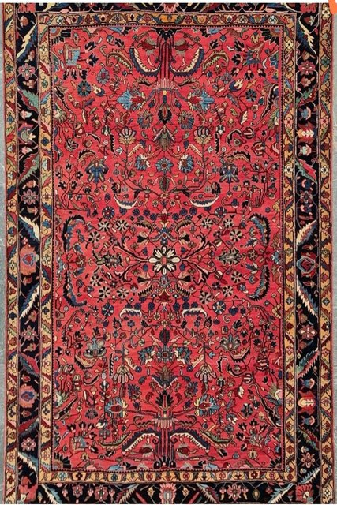

🧪 تست AR — فرش واقعی و مقیاس
در حال بارگذاری…
🔁 فرش واقعی / شطرنجی
حالت ۱ — داخل مرورگر (WebXR)
حالت ۲ — اپ گوگل (Scene Viewer)

حالت ۳ — دیدن روی زمین (آیفون)
حالت ۴ — تجربهی اختصاصی ما ★
برای اندازهگیری درست: متر را
روی زمین
بگذار، فرش را طوری بگذار که لبهاش روی صفر متر بیفتد، بعد گوشی را
مستقیم از بالا
بگیر و ببین لبهی دور کجای متر است.
در حال بررسی دستگاه…
📋 کپی گزارش فنی